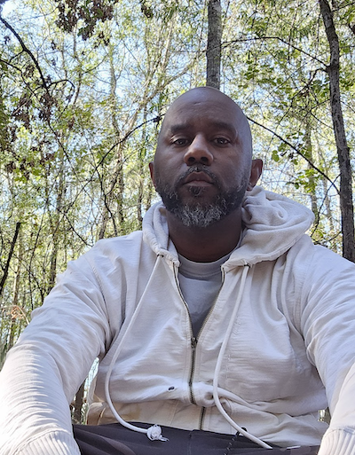

Civic technology
Making legislation
more accessible.
Legislative data, AI summaries, and semantic search brought together in a civic engagement platform.
Rails · ParadeDB · AI
A personal corner of the internet
Engineer. Problem solver.
A builder at heart.
I build backend systems, explore practical AI, and make tools that help other developers.

From an idea to something
people can actually use.
I’m a software engineer based in Houston, Texas. My work spans healthcare, civic technology, and financial services, with a focus on backend architecture and AI systems.
Ruby on Rails is a core part of my toolkit, alongside Python, Crystal, and .NET. I work across APIs, databases, and cloud infrastructure to bring those systems together.
Software with a purpose.
Civic technology
Legislative data, AI summaries, and semantic search brought together in a civic engagement platform.
Rails · ParadeDB · AI
Healthcare
Medical report automation and a native iPad check-in experience for a neurology practice.
RAG · Azure OpenAI · SwiftUI
Cloud infrastructure
Serverless risk assessment, data pipelines, and automated deployments across AWS environments.
AWS · Python · CI/CD
Things I’m building in public.
A Rails dashboard for exploring database health, slow queries, and indexes, with AI-assisted analysis.
Monitor queues, inspect jobs, and manage Sidekiq workers from inside VS Code.
A .NET wrapper for the Withings Health Data API.
Intelligent text chunking for retrieval-augmented generation and language model applications.
Keep in touch